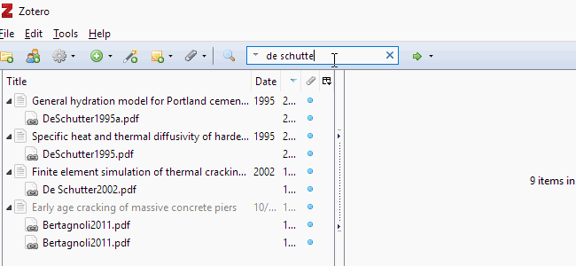

How I manage academic sources in emacs
Introduction
In this post I will go over my workflow for managing academic resources and seamless add citation into a $\LaTeX$ file.
Usually this process is boring since you have to add a source into your .bib file, then insert the citation with the bibtex key into your latex to generate the references section.
This process is independent of your .pdf source, so you can add citation for source that you have physically.
But nowadays almost every academic resource has a .pdf format, therefore is most convenient to have your references linked somehow with the source file.
A reference manager comes in handy for organizing sources.
I have tried a couple of different managers: Mendeley, JabRef and Zotero.
The one that stand out was Zotero for its versatility via plug-ins.
My main requirements for a bibliography manager was that I would be able to easily create a .bib file and easily rename the pdf according to my desired criteria which is AuthorYear.
Zotero does both, and it even move the renamed pdf to a specific folder.
In emacs I use AucTex+RefTex combo to edit \LaTex files.
RefTex provides a nice way to include citation but I don't like the search process.
Then I discovered a package called ivy-bibtex, which connects emacs to your .bib file.
When you call ivy-bibtex, C-c b b in my case, you are prompt a minibuffer with all your references.
The minibuffer shows the name of article, the author, the year and the type.
With ivy you can narrow down the list based on this categories.
The workflow
The workflow consists of two basic steps.
-
First I add the
.pdfinto zotero, use its engine to recover pdf metadata to generate a bibtex entry and use the plug-in ZotFile to rename the pdf accordingly with the bibtex key. -
Then I just need to start
ivy-bibtex, insert my citation asParenciteorTextcite.
If I need to open the pdf to check any information I can use ivy-bibtex and then press M-o p to open the pdf.
